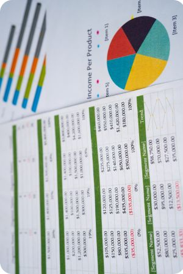

Kasvi Mahajan
Applied Mathematics Student | Western University
"Turning analytical problems into creative, data-driven solutions."
Graduating August 2025 • Passionate about data science, research modeling, and visual storytelling
About Me
My journey began in Computer Science, but I discovered my true passion lay in the elegant world of Applied Mathematics. This transition wasn't just academic—it was a revelation that mathematical modeling could be both rigorous and creative.
Today, I combine technical precision with artistic vision through my Studio Arts minor, creating data visualizations that don't just inform—they inspire. From epidemiological modeling to genome mutation simulations, I find beauty in the patterns that emerge from complex systems.
What drives me is the power of mathematics to tell stories about our world, whether it's tracking disease spread or understanding fitness landscapes in evolutionary biology. Every equation is a narrative waiting to be discovered.
🎓 Education
Western University
Applied Mathematics (Major)
Studio Arts (Minor)
Graduating August 2025
Certifications: IBM Data Analysis for Beginners (pursuing advanced data analysis certifications)
📊 Research Focus
Data Science & Modeling
Epidemiological modeling, simulations, parameter fitting, and sensitivity analysis using differential equations and computational methods.
🎨 Creative Side
Combining technical analysis with artistic vision to create compelling data visualizations that communicate complex mathematical concepts.
What I Love Most:
- Mathematical modeling and simulations
- Data visualization and storytelling
- Research and analytical problem-solving
- Bridging technical rigor with creative expression
Featured Projects
Showcasing my work in mathematical modeling, data analysis, and computational research
Key Technical Achievements:
- Implemented SVIR system using MATLAB’s ode45
- Fitted exponential growth/decay functions to real data
- Computed basic reproduction number \( R_0 \) and conducted stability analysis
- Validated results through residual analysis and parameter tuning
Curated data for COVID-19 cases in France in 2021 from renowned resources, developed an SVIR disease model that suits the trends of the data and performed a detailed statistical analysis using MATLAB and Python.
Key Skills Demonstrated:
- Data analysis in Microsoft Excel and SQL
- Utilization of Pivot tables for data summarization
- VBA for automation and efficiency gains
- Data cleaning and formatting for improved clarity and business operations
Analyzed data for a fictitious company that exports athletic gear and equipment, using MS Excel, Pivot tables and VBA. Improved company data formatting, repetitions, and clarity, which increased sales and streamlined day-to-day business.

Key Technical Achievements:
- Dataset engineering and cleaning for 8,000 individuals using Python
- Handling missing values and encoding categorical variables
- Developed a multiple linear regression model to predict income
- Identified significant demographic factors influencing earnings
Engineered and analyzed a dataset of 8,000 individuals using Python, handling missing values and encoding 8 categorical variables to model the impact of demographic factors on income.
Professional Experience
Building expertise through research, analysis, and real-world applications
Undergraduate Research Assistant
Western University (History)
May 2025 – PresentUndergraduate Research Assistant: Department of History (International Relations)
University of Western Ontario
London, ON
- Collected and evaluated data from 36 Canadian universities offering IR-related programs, enabling comparative analysis to guide departmental improvements at Western.
- Built an interactive Excel dashboard to visualise key metrics, trends, and strategic benchmarks, enhancing decision-making for long-term program enhancement.
- Developing a data-driven quality control strategy for the IR program using peer-reviewed research conducted on higher education teaching strategies, along with utilising current resources available at Western.
Undergraduate Research Assistant
Western University (Mathematics)
May 2024 – September 2024Undergraduate Research Assistant: Department of Mathematics
University of Western Ontario
London, ON
- Analysed fitness landscapes and genome mutations, improving research accuracy through data simulations in Python.
- Refined computational efficiency by 40% using MATLAB/Python, saving 6-7 hours in repetitive computations.
Undergraduate Research Assistant
Western University (Earth Sciences)
June 2023 – April 2024Undergraduate Research Assistant: Department of Earth Sciences
University of Western Ontario
London, ON
- Conducted in-depth research on 15+ peer-reviewed papers, ensuring research was aligned with ongoing project needs.
- Collaborated with PhD candidates to analyse geological datasets, contributing to a research project that improved data accuracy.
- This resulted in enhanced overall research quality for hundreds of samples.
Project Intern
Ernst & Young (EY) India
May 2023 – August 2023Project Intern
Ernst & Young (EY) India
New Delhi, India
- Conducted real-time research utilising corporate business activities of over 50 companies with a focus on organisations like PowerGrid and Tata Enterprise, and their tenders to procure them as potential clients.
- Provided the collected data in an organised format using Microsoft Excel.
- Curated data from websites like psuwatch.com for ongoing news and changes in companies for updated information, and furnished my supervisors weekly.
- Utilised VBA and Pivot tables to automate data entry, calculations and formatting tasks.
Skills & Expertise
A diverse toolkit combining technical proficiency with creative problem-solving
Python
Python Expertise
Utilized for comprehensive data analysis, machine learning model development, scripting automated tasks, and building web applications. Strong command over libraries like Pandas, NumPy, Scikit-learn, and Matplotlib.
- Pandas, NumPy, Scikit-learn
- Automated data processing
- Web scraping and API integration
MATLAB
MATLAB Mastery
Proficient in mathematical modeling, simulation, and algorithm development, particularly in numerical analysis and differential equations. Applied extensively in disease modeling and scientific computing.
- Numerical Analysis, ODE solvers
- Signal processing, Image processing
- Toolbox utilization (Simulink)
R
R Programming for Stats
Experienced in statistical computing, graphical techniques, and data analysis. Used for complex statistical modeling and creating high-quality data visualizations.
- Statistical modeling (glm, lm)
- Data visualization (ggplot2)
- Package development
SQL
SQL for Database Management
Competent in querying and managing relational databases, including data extraction, manipulation, and analysis. Experience with various SQL dialects.
- Database querying & optimization
- Data integrity & consistency
- Reporting & analytics
Data Visualization
Data Visualization & Storytelling
Skilled in transforming complex data into clear, compelling, and aesthetically pleasing visual narratives using tools like Matplotlib, Seaborn, and Power BI.
- Interactive dashboards (Power BI)
- Information design
- Visual storytelling
Mathematical Modeling
Mathematical Modeling & Simulation
Expert in developing and analyzing mathematical models for real-world phenomena, including epidemiological systems and complex simulations, using differential equations and computational methods.
- Epidemiological modeling
- Differential equations
- Parameter fitting & analysis
Core Competencies
Differential Equations
Epidemiological Modeling
Data Visualization
Parameter Estimation
Computational Biology
Statistical Analysis
Research Design
Mathematical Modeling
Leadership & Service
Committed to building inclusive communities and empowering the next generation of leaders
👑 Director of Outreach
Women in Mathematics
2023 – Present
Leading initiatives to promote gender diversity in STEM fields and creating inclusive opportunities for women in mathematics. Organizing workshops, mentorship programs, and community outreach events.
💖 Team Lead
Leadership and Mentorship Program
2022 – 2024
Guiding and mentoring fellow students in their academic and professional development. Facilitating workshops on leadership skills, career planning, and personal growth.
👥 Committee Member
Western Science Students' Council
2022 – Present
Contributing to student governance and representing the interests of science students. Participating in policy development and organizing student engagement activities.
Leadership Philosophy
"I believe in creating spaces where everyone can thrive. Whether it's encouraging women to pursue mathematics, mentoring students through their academic journey, or advocating for student needs, my goal is to build bridges and open doors for others to follow their passions."
Let's Connect
Interested in collaboration, research opportunities, or just want to chat about mathematics and data science?